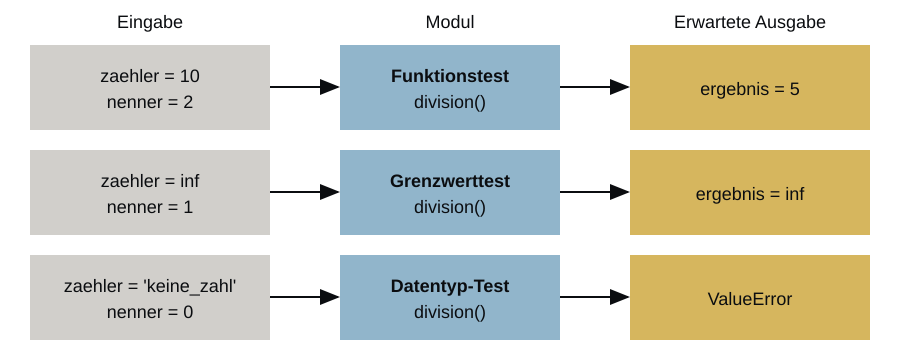
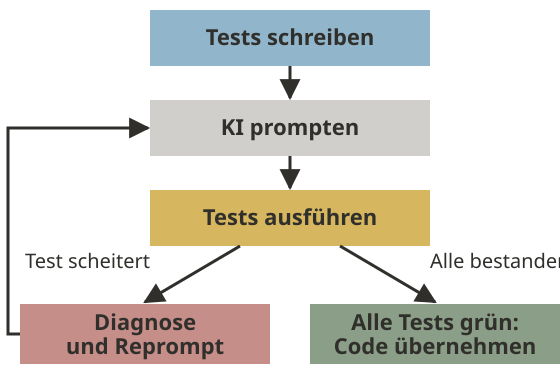
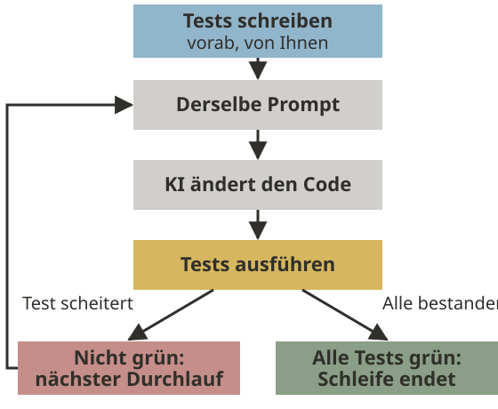
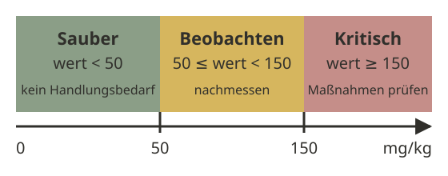

def division(zaehler, nenner):
if not isinstance(nenner, (int, float)):
raise ValueError(f"Nenner nicht vom Datentyp `int` oder `float`")
elif not isinstance(zaehler, (int, float)):
raise ValueError(f"Zaehler nicht vom Datentyp `int` oder `float`")
elif not nenner:
print("Warnung Division durch 0")
return None
else:
ergebnis = zaehler / nenner
print(f"Das Ergebnis von {zaehler}/{nenner} = {ergebnis}")
return ergebnisUnit-Tests
The only way to go fast is to go well.
— Robert C. Martin
Unit-Tests
TL;DR
Unit-Tests dienen dazu, Fehler zu erkennen und reproduzierbar zu machen. Ein Unit-Test prüft eine einzelne Einheit, z. B. eine Funktion oder eine Klasse.
Beim Programmieren mit KI sind Tests mehr als Fehlererkennung: Sie sind die Spezifikation und legen das erwartete Verhalten fest, bevor die KI Code generiert. Schlägt ein Test auf KI-generierten Code an, hat die Verifikation funktioniert.
Tests in Python
Zum Testen verwendet man in Python meist spezielle Pakete wie unittest oder pytest, die dann automatisch bei Code-Änderungen ausgeführt werden. Einfache Tests können direkt in den Code geschrieben werden. Hierfür dient die assert-Anweisung. Sie prüft, ob eine Testbedingung erfüllt ist, und löst einen AssertionError aus, wenn dies nicht der Fall ist.
Wir wollen zum Beispiel die zuvor definierte Divisionsfunktion division() testen (siehe 07a_Exceptions).
Für den Umgang mit Programmfehlern unterscheidet man fünf Strategien: Fehlervermeidung, Fehlererkennung, Fehlerbehebung, Fehlerbehandlung und Fehlerausschluss. Wir betrachten zuerst, wie Tests Fehler vermeiden und erkennen helfen. Danach wiederholen wir Fehlerbehebung, Fehlerbehandlung und Fehlerausschluss; Vertiefungen dazu stehen in 07b_Debugging und 07a_Exceptions.
Fehler vermeidet man, indem man früh prüft: durch Test-Driven Development, bei dem der Test vor dem Code entsteht, durch eine möglichst vollständige Testabdeckung (Full Test Coverage) und durch Code Reviews, bei denen eine andere Person jede Codezeile prüft. Bei KI-generiertem Code sind diese Strategien besonders wichtig: Wir schreiben die Tests, bevor die KI Code erzeugt, geben der KI ein Ziel für die Testabdeckung vor (etwa 90 %), lassen eine zweite KI den generierten Code prüfen und prüfen ihn zusätzlich selbst. Das erfordert Vorarbeit, spart aber später Suchaufwand. Test-Driven Prompting und Testabdeckung behandeln wir weiter unten.
Syntaktische Fehler meldet bereits die IDE. Statische Fehler findet man mit Lint-Tools, die den Code anhand von Regeln analysieren. Dynamische Fehler zeigen sich erst bei der Ausführung; sie werden traditionell durch Unit-Tests aufgedeckt. Auch bei KI-generiertem Code hilft das: KI erzeugt gerne Syntaxfehler, entdeckt sie aber mit Lint-Tools, die moderne IDEs und KIs intern nutzen, und moderne KIs sollten sich selbst Unit-Tests schreiben. Nach jeder größeren Code-Änderung führen wir alle Unit-Tests automatisch aus, um Verhaltensänderungen und Nebeneffekte früh zu erkennen.
Ein Unit-Test ist zusätzlich geschriebener Code, der eine einzelne Funktion mit bestimmten Eingaben aufruft und die erwarteten Ausgaben oder Exceptions prüft. Der Test-Code ist oft umfangreicher als der geprüfte Code. Die Tests laufen automatisiert nach jeder Änderung und legen damit fest, was die Funktion leisten soll. Ziel ist zu prüfen, ob die Funktion ihre Aufgabe korrekt erfüllt und Fehlerfälle korrekt behandelt; das erwartete Verhalten muss dafür vorher spezifiziert und dokumentiert sein. Gerade bei komplexeren Programmen treten leicht unbeabsichtigte Seiteneffekte auf, die sich so nach jeder Änderung schnell erkennen lassen.
Wir unterscheiden Funktionstests, Grenzwerttests und Datentyp-Tests. Funktionstests prüfen, ob die Funktion das richtige Ergebnis liefert, Grenzwerttests, ob sie mit Grenzwerten umgehen kann, und Datentyp-Tests, ob sie mit unerwarteten Eingaben umgehen kann. Die folgenden Abschnitte zeigen jeden Typ am Beispiel der Funktion division().

division() mit einer Eingabe auf und prüft die erwartete Ausgabe.Funktionstest
Hierfür schreiben wir als Erstes einen Funktionstest. Dieser überprüft die korrekte Funktion einer Funktion mit mehreren Eingaben, für die wir das korrekte Ergebnis kennen. Üblich sind mehrere Tests, damit wir nicht zufällig das richtige Ergebnis erhalten, sondern es für verschiedene Kombinationen bestätigt ist. Bei Gleitkommazahlen vergleichen wir nicht mit ==, sondern mit math.isclose(); die Beispiele hier sind exakt darstellbar (10/2, 50/5).
graph LR
s([EINGABE<br>zaehler=10<br>nenner=2]) --> w[division]
w --> e([AUSGABE<br>return 5])
style s fill:none,stroke:none
style e fill:none,stroke:none
def test_funktion(): # Üblich ist es, Testfunktionen mit `test_` zu beginnen
assert division(10, 2) == 5
assert division(10, 5) == 2
assert division(50, 1) == 50
assert division(50, 5) == 10test_funktion()Das Ergebnis von 10/2 = 5.0
Das Ergebnis von 10/5 = 2.0
Das Ergebnis von 50/1 = 50.0
Das Ergebnis von 50/5 = 10.0Grenzwerttest
Ein weiterer wichtiger Test ist der Grenzwerttest. Hier prüfen wir, ob Eingaben im Grenzbereich korrekt behandelt werden, etwa unendliche Werte oder die Division durch 0 (Sonderfälle). Davon unterscheiden sich die Grenzen von Äquivalenzklassen, wie wir sie beim Boden-Beispiel (50 und 150) testen: Dort prüfen wir den Grenzwert selbst und seine Nachbarn. Wir haben oben beim Erstellen der Funktion definiert, dass bei einer Division durch 0 die Funktion den Wert None ausgeben soll.
graph LR
s([EINGABE<br>zaehler=inf<br>nenner=1]) --> w[division]
w --> e([AUSGABE<br>return inf])
style s fill:none,stroke:none
style e fill:none,stroke:none
import math # die Zahl unendlich ist in der math-Bibliothek definiert
def test_grenzwert():
assert division(math.inf, 1) == math.inf
assert division(math.inf, 100) == math.inf
assert math.isnan(division(math.inf, math.inf)) # nan (not a number) prüfen wir klar mit der Funktion `isnan`
assert division(1, math.inf) == 0
assert division(100, 0) is Nonetest_grenzwert()Das Ergebnis von inf/1 = inf
Das Ergebnis von inf/100 = inf
Das Ergebnis von inf/inf = nan
Das Ergebnis von 1/inf = 0.0
Warnung Division durch 0Datentyp-Test
Da Python dynamische Datentypen unterstützt, ist der Datentyp-Test besonders wichtig. Hierbei wird getestet, ob die Funktion falsche Datentypen als Eingabe richtig behandelt.
graph LR
s([EINGABE<br>zaehler='str'<br>nenner=0]) --> w[division]
w --> e([AUSGABE<br>ValueError])
style s fill:none,stroke:none
style e fill:none,stroke:none
Hierbei können wir nicht direkt assert nutzen, da die Exception unseren Code zum Absturz bringt.
try:
division("falscher typ", 1)
except Exception as e:
assert isinstance(e, ValueError)Für vollständige Tests nutzen wir einen try-except-Block und die else-Anweisung. Sie wird nur dann ausgeführt, wenn im try-Block keine Exception auftritt, was im Testfall unerwünscht ist. In diesem Fall lösen wir selbst einen AssertionError aus. Ferner prüfen wir, ob die ausgelöste Exception der Funktion auch den richtigen Typ ValueError hat.
def test_datentyp():
# wir testen den Zähler
try:
division("falscher typ", 1)
except Exception as e:
assert isinstance(e, ValueError)
else:
raise AssertionError("Datentyp")
# den zweiten Fall des Nenners
try:
division(10, "falscher typ")
except Exception as e:
assert isinstance(e, ValueError)
else:
raise AssertionError("Datentyp")test_datentyp()Mit Tests bei Code-Änderungen Fehler erkennen
Diese Unit-Tests haben wir absichtlich als Funktionen definiert, sodass wir sie bei Code-Änderungen immer wieder ausführen können. So testen wir, ob die Implementierung die gestellten Erwartungen noch erfüllt.
Überschreiben wir zum Beispiel die Divisionsfunktion durch eine triviale Implementierung:
def division(zaehler, nenner):
return zaehler / nennerUnser Funktionstest läuft weiterhin durch. Deshalb genügt es meist nicht, nur diesen Test zu schreiben oder bei der Entwicklung nur die Funktion zu prüfen.
test_funktion()Der Grenzwerttest löst jetzt eine Exception aus.
test_grenzwert()--------------------------------------------------------------------------- ZeroDivisionError Traceback (most recent call last) Cell In[11], line 1 ----> 1 test_grenzwert() Cell In[4], line 8, in test_grenzwert() 6 assert math.isnan(division(math.inf, math.inf)) # nan (not a number) prüfen wir klar mit der Funktion `isnan` 7 assert division(1, math.inf) == 0 ----> 8 assert division(100, 0) is None Cell In[9], line 2, in division(zaehler, nenner) 1 def division(zaehler, nenner): ----> 2 return zaehler / nenner ZeroDivisionError: division by zero
Auch der Datentyp-Test ist nicht erfolgreich, weil wir definiert haben, dass bei falschen Eingabedatentypen ein ValueError erzeugt werden soll, wir aber einen TypeError erhalten.
test_datentyp()--------------------------------------------------------------------------- TypeError Traceback (most recent call last) Cell In[7], line 4, in test_datentyp() 3 try: ----> 4 division("falscher typ", 1) 5 except Exception as e: Cell In[9], line 2, in division(zaehler, nenner) 1 def division(zaehler, nenner): ----> 2 return zaehler / nenner TypeError: unsupported operand type(s) for /: 'str' and 'int' During handling of the above exception, another exception occurred: AssertionError Traceback (most recent call last) Cell In[12], line 1 ----> 1 test_datentyp() Cell In[7], line 6, in test_datentyp() 4 division("falscher typ", 1) 5 except Exception as e: ----> 6 assert isinstance(e, ValueError) 7 else: 8 raise AssertionError("Datentyp") AssertionError:
Test-Driven Prompting
In der agentischen Programmentwicklung verändern Tests ihre Rolle: Sie sind nicht mehr nur Prüfinstrument für fertigen Code, sondern Spezifikation: die präzise Beschreibung des gewünschten Verhaltens. Wer Tests schreibt, bevor er die KI promptet, operationalisiert damit die Anforderung: aus vager Beschreibung wird messbare Bedingung.
Test-Driven Prompting (TDP) folgt dem agentischen Zyklus:
- Anforderung verstehen
- Tests schreiben, die das gewünschte Verhalten operationalisieren
- KI mit der Anforderung prompten, ohne ihr die Tests zu zeigen
- KI generiert Code
- Tests ausführen
- Scheitern Tests → Diagnose, Reprompt, iterieren
Ein fehlgeschlagener Test auf KI-generierten Code ist kein Misserfolg: Der Fehler wurde vor dem Einsatz gefunden. Tests begrenzen allerdings nur, was sie prüfen. Generierter Code kann Testwerte fest eintragen, und ein Agent kann einen fehlschlagenden Test ändern oder löschen. Deshalb behandeln wir die Tests als schreibgeschützt für die KI, ergänzen Nachbarwerte und lesen den Code zusätzlich im Review (08b_CodeReview).
Klassisch erkennen Tests Fehler in fertigem Code, und ein scheiternder Test gilt als Problem. Beim Test-Driven Prompting definieren Tests das Verhalten und sind die Anforderung in Code. Wer sie vor dem Prompt schreibt, formuliert den Prompt präziser, und ein scheiternder Test auf KI-Code zeigt einen Fehler vor dem Einsatz. Die Tests zeigen außerdem, wann der Code fertig ist, und erkennen bei Änderungen durch die KI Verhaltensänderungen und Nebeneffekte.
Der Zyklus verbindet Anforderung, Tests und Prompt: Aus der Anforderung schreiben wir die Tests, zeigen sie der KI aber nicht. Die KI bekommt nur die Anforderung und generiert Code, der Testlauf verifiziert ihn, und fehlschlagende Tests führen zu Diagnose und Reprompt. Den Schritt Verifizieren des agentischen Zyklus haben wir in 03d_AgentischesProgrammieren eingeführt; hier formalisieren wir ihn durch Tests.
Ein Test, der vor dem Prompt entsteht, beantwortet konkrete Fragen: Welche Eingaben sind gültig, welche Ausgaben werden erwartet, welche Grenzfälle gibt es und welche Fehler soll die Funktion auslösen? Die Anforderungen aus 04a_Anforderungen sind dafür die Quelle.
Sind alle Tests grün, sind die getesteten Fälle erfüllt; ungetestete Fälle bleiben offen. Ein scheiternder Test ist ein Erfolg der Verifikation, weil der Fehler vor dem Einsatz auffällt. Bereiche, die kein Test ausführt, bleiben ein unsichtbares Risiko.

Beim Ralph-Loop (nach Geoffrey Huntley) wiederholen wir immer denselben Prompt, bis das Ziel erreicht ist. Der Fortschritt steckt nicht im Gespräch mit der KI, sondern in den Dateien und im Git-Verlauf: Jeder Durchlauf sieht den aktuellen Code und die Tests.

Als Shell-Schleife sieht das so aus: Sie ruft zuerst pytest auf und endet, sobald alle Tests grün sind; andernfalls startet sie die KI mit dem Prompt aus PROMPT.md erneut.
for i in $(seq 10); do
pytest -q && break
claude -p "$(cat PROMPT.md)"
doneDie Obergrenze von zehn Durchläufen begrenzt Zeit und Kosten. Die Tests schreiben wir vorab, wie beim Test-Driven Prompting, aus der Anforderung. Sie liegen außerhalb der Schleife, und die KI darf sie nicht ändern, sonst legte sie ihr eigenes Abbruchkriterium fest. Der Loop kann daher nur so gut sein wie diese Tests.
Umwelt-Beispiel: Bodenverschmutzung klassifizieren
Als durchgehendes Beispiel für Test-Driven Prompting verwenden wir eine typische Aufgabe aus dem Umweltingenieurwesen: die Klassifikation von Bodenkontaminationswerten. Die Grenzwerte sind didaktisch gewählt und keine Prüf- oder Maßnahmenwerte der BBodSchV; die fehlerhafte Variante haben wir bewusst konstruiert.
Anforderung: Gesucht ist eine Funktion klassifiziere_boden(wert), die einen Messwert in mg/kg als "Sauber", "Beobachten" oder "Kritisch" klassifiziert. Grenzwerte: wert < 50 ist Sauber, 50 <= wert < 150 ist Beobachten, wert >= 150 ist Kritisch. Ist die Eingabe keine Zahl, löst die Funktion einen ValueError aus.
Bevor wir die KI prompten, schreiben wir Tests für die drei Testarten: Funktionstests für typische Messwerte, Grenzwerttests für die Klassengrenzen und einen Datentyp-Test für eine Eingabe, die keine Zahl ist. Diese Tests halten wir vor der KI zurück: Kennt sie die Testwerte, kann sie sie fest eintragen und besteht die Tests, ohne die Aufgabe zu lösen. Der Prompt enthält nur die Anforderung an die Klassifikation und nennt den ValueError bewusst nicht: Wer im Prompt alles vorausdenkt, braucht die KI nicht. Die KI liefert eine Funktion, bei der zwei Tests scheitern: Der Vergleich wert <= 150 ordnet den Wert 150 fälschlich als "Beobachten" ein, und bei einer Eingabe, die keine Zahl ist, löst sie einen TypeError statt des geforderten ValueError aus. Die Tests machen beides sichtbar, bevor wir die Funktion einsetzen.
Die Anforderung legt drei Klassen fest: unter 50 mg/kg ist der Boden sauber, von 50 bis unter 150 mg/kg beobachten wir ihn, ab 150 mg/kg ist er kritisch. Aus dieser Anforderung schreiben wir zuerst die Tests; die KI bekommt später nur die Anforderung, nicht die Tests. Die Klassen stehen für den Handlungsbedarf: bei „Sauber“ ist nichts zu tun, bei „Beobachten“ messen wir nach, bei „Kritisch“ müssen Maßnahmen geprüft werden. In der Praxis unterscheidet die Bundes-Bodenschutzverordnung (BBodSchV) Vorsorge-, Prüf- und Maßnahmenwerte; unsere drei Klassen bilden diese Abstufung stark vereinfacht nach. Genau an den Klassengrenzen entstehen die typischen Fehler, weshalb wir dort gezielt testen. Wie bei division() verlangen wir außerdem einen ValueError, wenn die Eingabe keine Zahl ist.

klassifiziere_boden mit den Grenzen 50 und 150 mg/kg und dem jeweiligen Handlungsbedarf.Die drei Tests entsprechen den Testarten aus dem ersten Teil. Der Funktionstest prüft typische Messwerte (10, 100 und 200 mg/kg), der Grenzwerttest die beiden Klassengrenzen 50 und 150 mg/kg und legt damit fest, in welche Klasse die Grenzwerte selbst fallen. Der Datentyp-Test prüft, dass eine Eingabe, die keine Zahl ist, einen ValueError auslöst. Die KI soll eine Funktion schreiben, die den Job erfüllt und dabei die Tests besteht, nicht eine, die nur die Tests besteht. Deshalb kennt sie die Tests nicht: Eine Funktion, die nur die Testwerte kennt (if wert == 10: return "Sauber" und so weiter), besteht alle Tests, löst die Aufgabe aber nicht. Der Prompt beschreibt daher nur die Anforderung und erlaubt der KI, die Tests auszuführen, nicht aber, sie zu lesen oder zu ändern. Den ValueError für Eingaben, die keine Zahl sind, nennt er nicht: Der Datentyp-Test prüft genau das, woran die KI nicht gedacht hat.
Der Prompt beschreibt die Anforderung und erlaubt der KI nur, die Tests auszuführen: Sie darf sie weder ansehen noch ändern. Sie liefert eine Funktion, die auf den ersten Blick plausibel aussieht. Erst der Testlauf zeigt, dass der Vergleich wert <= 150 den Grenzwert falsch behandelt und dass die Funktion keine Eingabeprüfung enthält.
Der Funktionstest läuft grün, zwei Tests scheitern. Der Grenzwerttest scheitert für 150 mg/kg mit einem AssertionError: Die Funktion gibt "Beobachten" statt "Kritisch" zurück. Der Datentyp-Test scheitert mit einem TypeError: Bei der Eingabe "abc" schlägt schon der Vergleich wert < 50 fehl, weil sich ein Text nicht mit einer Zahl vergleichen lässt. Verlangt ist aber ein ValueError. Hier zeigt sich, woran die KI nicht gedacht hat, weil der Prompt es nicht nannte.
Wir kopieren die beiden Fehlermeldungen in den Prompt und bitten die KI, die Fehler in klassifiziere_boden zu beheben. Die Meldungen zeigen nur die fehlgeschlagenen Fälle, nicht alle Tests. Die KI ändert den Vergleich zu < 150 und ergänzt die Prüfung auf Zahlen mit einem ValueError, danach laufen alle drei Tests grün.
Testabdeckung
Selbst wenn alle geschriebenen Tests grün sind, kann KI-generierter Code ungetestete Bereiche enthalten. Testabdeckung (Coverage) misst, welcher Anteil des Codes durch Tests ausgeführt wurde.
Zeilenabdeckung (Line Coverage): Welche Codezeilen wurden durch Tests ausgeführt? Eine Abdeckung von 80 % bedeutet, dass 20 % der Zeilen nie getestet wurden; ihr Verhalten ist unbekannt.
Verzweigungsabdeckung (Branch Coverage): Wurden alle if/else-Zweige getestet? Sie ist strenger als reine Zeilenabdeckung, weil Zweige, die nur bei speziellen Eingaben aktiv werden, sonst unbemerkt bleiben.
Im Beispiel auf den Folien, der korrigierten Funktion, hat die KI zusätzlich eine Fehlerprüfung für negative Werte ergänzt, die die Anforderung nicht verlangt. Messen lässt sich das mit coverage run --branch; für unsere drei Tests meldet es 9 von 10 Anweisungen und 7 von 8 Zweigen als ausgeführt. Dabei gilt: Testabdeckung misst nur, was ausgeführt wurde, nicht, ob es richtig ist. Die Abdeckung allein hätte den Fehler <= 150 nicht gefunden: Die Zeile mit dem Vergleich führen die Tests in beiden Varianten aus. Tests können das Vorhandensein von Fehlern zeigen, nicht ihre Abwesenheit (Dijkstra).
Der Zweig wert < 0 wird von keinem unserer Tests mit wahr betreten. Der Zeilenzähler kommt so zustande: Die Funktion hat 10 Anweisungen (def, vier Bedingungen, ein raise und vier return), davon wird return "Fehler" nie ausgeführt. Die vier Bedingungen ergeben 8 Zweige, von denen nur der wahre Zweig von wert < 0 fehlt. Ein ungetesteter Zweig ist ein unsichtbares Risiko: Wir wissen nicht, ob er korrekt arbeitet. Die Prüfung von Code durch andere Personen folgt als nächster Verifikationsschritt in 08b_CodeReview.
Debugging und Fehlerbehandlung
Wenn Tests fehlschlagen, beginnt der nächste Schritt der Verifikation: das systematische Suchen nach der Ursache. Dabei hilft Debugging (07b_Debugging). Zugleich müssen Programme mit erwartbaren Laufzeitfehlern robust umgehen können. Python stellt dafür mit try, except, raise, else und finally einen strukturierten Exception-Mechanismus bereit (07a_Exceptions).
Debugging ist das systematische Suchen und Beheben von Fehlern. Methoden sind Logging-Nachrichten zur Verfolgung des Programmflusses und Debugger für die detaillierte Analyse. Ein Debugger erlaubt die schrittweise Ausführung von Codezeilen, das Überwachen von Variablenwerten und das dynamische Einfügen von Code.
Systematisches Debugging ist eine Kernkompetenz jeder programmierenden Person. In Python gibt es den Standard-Debugger pdb und die oft benutzerfreundlicheren Debugger der IDEs. Mehr dazu in der Übung und in 07b_Debugging.
Allen Bemühungen zum Trotz treten in realen Programmen Fehler zur Laufzeit auf. Wir wollen sie abfangen und behandeln, damit das Programm weiterläuft oder kontrolliert beendet wird. Ein dynamischer Fehler erzeugt eine Exception; Python stellt dafür try, except und raise bereit.
try enthält ein vermutlich fehleranfälliges Stück Programmcode. Tritt darin ein bestimmter Fehler auf, wird der Block beendet und der passende except-Block aufgerufen. raise löst eine Exception aus und gibt in einem except-Block die abgefangene Exception weiter. finally wird nach dem try-Block immer ausgeführt, else nur dann, wenn keine Exception auftrat.
Exceptions unterbrechen den normalen Programmverlauf, kommunizieren den Fehler mit einer Fehlermeldung und verhindern unkontrolliertes Abstürzen. Sie werden im Stack nach oben weitergegeben, bis sie abgefangen werden oder das Programm abstürzt. Ziel ist, das Programm in einem lauffähigen Zustand zu halten.
Die Animation zeigt das an einem Beispiel: main() ruft auswertung() auf, diese mittelwert() und diese division(). In division() ist der Nenner 0, und es entsteht ein ZeroDivisionError. Die Exception verlässt eine Funktion nach der anderen, jede bricht ab und verschwindet vom Stack. Fängt niemand die Exception ab, erreicht sie main(), und das Programm stürzt ab.
Bekannte Exceptions sollten wir gezielt abfangen, also die erwartete Exception benennen. Ein except ohne Typ fängt auch unerwartete Fehler und sogar KeyboardInterrupt ab und verdeckt so Fehler. In Python geschieht das Abfangen mit dem try-except-Block; wird die Exception abgefangen, läuft das Programm weiter.
In der Animation steht in main() ein try … except ZeroDivisionError. Der ZeroDivisionError aus division() wandert wie zuvor durch mittelwert() und auswertung() nach unten, wird aber in main() abgefangen. Das Programm läuft weiter.
Exceptions werden auf mehreren Ebenen genutzt: vom Betriebssystem als vordefinierte System-Exceptions, von der Programmiersprache als eingebaute Exceptions und im eigenen Code als selbst definierte Exceptions. Einsatzgebiete sind Stellen, an denen Fehler wahrscheinlich sind: Kommunikation mit externen Quellen, Lesen von Dateien, Nutzereingaben und Netzwerkverbindungen.
Im Beispiel löst die Division durch 0 einen ZeroDivisionError aus, den wir gezielt abfangen. Je nach Code kommen ein TypeError bei falschem Datentyp und ein NameError bei nicht definierter Variable hinzu.
Wir können Fehler lokal behandeln und wollen dennoch die oberen Ebenen des Programms informieren. Die raise-Anweisung löst dafür eine Exception aus und gibt sie nach oben weiter; in einem except-Block gibt sie die abgefangene Exception weiter.
Die Funktion count_up_and_down löst für x <= 0 mit raise einen ValueError aus. Der aufrufende try-Block fängt ihn ab und gibt eine Meldung aus.
Gewisser Programmcode kann mittels mathematischen Beweises validiert werden. Das Hoare-Kalkül (C. A. R. Hoare, 1969) beschreibt jede Anweisung C durch eine Vorbedingung P und eine Nachbedingung Q, geschrieben {P} C {Q}. Der Beweis zeigt die Korrektheit nur relativ zur Spezifikation. Für die meisten Anwendungen ist das zu zeitaufwendig und komplex; es kommt nur bei kritischen Systemen wie Medizintechnik oder Luftfahrt zum Einsatz.
Quiz
shuffleQuestions: true
shuffleAnswers: true
### Welcher Test scheitert, wenn `klassifiziere_boden` mit `wert <= 150` statt `wert < 150` vergleicht?
- [x] Der Grenzwerttest
- [ ] Der Funktionstest
- [ ] Der Datentyp-Test
- [ ] Alle drei Tests
### Was ist ein Unit-Test in Python?
- [x] Ein Test für eine einzelne Funktion oder Klasse
- [ ] Ein Test für ein ganzes Programm
- [ ] Ein visuelles Testwerkzeug
- [ ] Eine Form der Dokumentation
### Was passiert, wenn ein `assert` fehlschlägt?
- [ ] Der Test wird übersprungen
- [x] Es wird ein `AssertionError` ausgelöst
- [ ] Der Code läuft trotzdem weiter
- [ ] Das Programm wird beendet, ohne Fehlermeldung
### Warum verwendet man Unit-Tests?
- [x] Um Fehler frühzeitig zu erkennen
- [x] Um das erwartete Verhalten vor dem Prompten zu spezifizieren
- [ ] Um Code automatisch zu formatieren
- [ ] Um den Speicherverbrauch zu senken
### Was bedeutet Test-Driven Prompting (TDP)?
- [x] Tests vor dem KI-Prompt schreiben, um die Anforderung überprüfbar zu machen
- [ ] Die KI schreibt automatisch Tests für den generierten Code
- [ ] Tests werden nach dem Deployment geschrieben
- [ ] Tests ersetzen die Anforderungsanalyse
### Was bedeutet ein fehlgeschlagener Test auf KI-generierten Code?
- [x] Ein Fehler wurde vor dem Einsatz gefunden: Die Verifikation hat funktioniert
- [ ] Der KI-Prompt war falsch formuliert
- [ ] Der Code muss komplett neu generiert werden
- [ ] Der Test selbst ist fehlerhaft
### Welche Pakete werden in Python häufig für Unit-Tests verwendet?
- [x] `unittest`
- [x] `pytest`
- [ ] `math`
- [ ] `random`
### Welche Testarten haben wir für `division()` behandelt?
- [x] Grenzwerttest
- [x] Funktionstest
- [x] Datentyp-Test
- [ ] Syntaxtest
### Warum garantieren grüne Tests keine korrekte Funktion?
- [x] Sie zeigen nur, dass die getesteten Fälle stimmen
- [ ] Grüne Tests beweisen die Korrektheit immer vollständig
- [ ] Tests laufen nur bei Fehlern
- [ ] Python prüft Tests nur stichprobenartig
### Was sagt eine hohe Zeilenabdeckung aus?
- [x] Der Code wurde ausgeführt, nicht unbedingt, dass er korrekt ist
- [ ] Der Code enthält keine Fehler
- [ ] Alle Grenzwerte sind richtig behandelt
- [ ] Der Code läuft besonders schnell
### Was deckt Branch Coverage ab?
- [x] Ob alle if/else-Zweige durch Tests ausgeführt wurden
- [ ] Ob alle Dateien im Projekt getestet wurden
- [ ] Die Anzahl der Codezeilen in einem Test
- [ ] Die Laufzeit der Tests